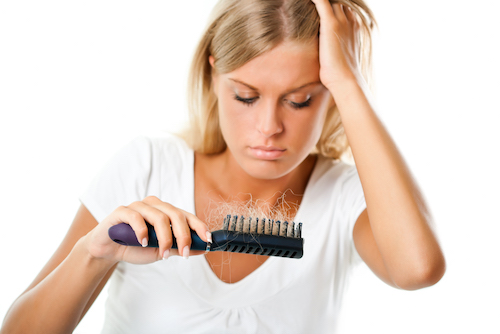
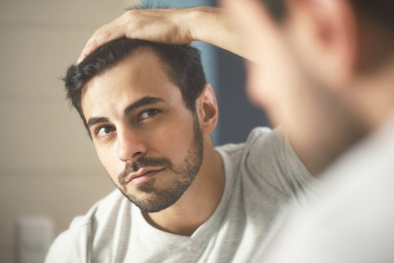

Why do we loose hair?
Hair loss, known as Alopecia, is a common condition. It does not hurt, it is not life-threatening, but it is a source of emotional distress and can have profound effects on the quality of life of those who suffer this condition. Millions of men and women in the US are affected by hair loss and/or hair thinning to some degree and statistics show those numbers are increasing. In our society, hair is intimately related to beauty and youth, but hair also plays an important role in the protection of the scalp from UV rays, as well as extreme cold or hot temperatures. Furthermore, scientists are studying the role of hair as a sense organ and how the brain gather information from our hair.
Hair loss is caused by a wide range of factors which are still not fully understood. One of the major aspects that has been linked to hair loss is heredity, the genes passed from our parents. Stress, our lifestyle habits - including diet and exercise -, environmental factors, our immune system, hormonal imbalances, and disease are other elements that have a major influence on the loss of hair. Science and research in this field show that there are many complex factors combined in the development of hair thinning and hair loss. This important concept must be taken in consideration when we approach the treatment that should address each one of this aspects.
Anatomy
The hair shaft is the portion that projects beyond the surface of the skin. It is made of keratin. The hair follicle is a micro-organ that resides in the skin. It is one the fastest growing tissue in the body, requires a lot of energy to function appropriately and it is extremely sensitive to stress, changes in hormonal levels, medications, etc.
Hair Growth Cycle
Hair follicles are in different and non synchronized stages of growth, regression, or rest at all times.
Types of Alopecia
The most common type of hair loss are the Male Pattern Hair Loss ( MPHL) and Female Pattern Hair Loss ( FPHL )These conditions are hereditary and genetically transmitted from our parents.

MPHL or Androgenic alopecia represents 95% of all hair loss in males. The condition may begin at any age. Twenty (20%) of men in their 20’s, 50% of men in their 50’s suffer from this type of alopecia. Hair loss often begins on the front, sides, and/or on the crown of the head. Some men may develop a bald spot or just a receding hair line, while others may lose most of their hair.
DHT or Di-Hydro-Testosterone is a potent endogenous hormone, t produced by the conversion of testosterone by the action of the enzyme 5-alpha-reductase. It affects sensitive hair follicles in two ways: first, it shortens the anagen phase of the hair growth cycle, which “ages” the hair follicles. Second, it causes miniaturization of the hair follicles. The result of these two effects are shorter hairs, increasingly finer and less pigmented hairs, and eventually less hair altogether.
FPHL: Around 40% of women by age 50 show signs of hair loss and less than 45% of women actually reach the age of 80 with a full head of hair. Their hair generally thins all over the head, but the frontal hairline is maintained. Women tend to lose their hair in the parting of the hair, but rarely results in total hair loss. Unlike men and DHT, the trigger for FPHL has not been established so far.

Telogen Effluvium: characterized by a sudden onset of diffuse shedding that occurs 3-4 months after a major event or illness ( the birth of a child, high fever, severe emotional disorder). It can affect women and men and evolves quickly. In general, the prognosis is good and leaves no sequelae, but in some cases can become chronic and unpredictable.
Alopecia Areata: characterized by non-scarring hair loss with unpredictable evolution. The most common presentation is with round or oval patches on the head or in different parts of the body but it can also manifest as alopecia totalis in which there is a complete or almost complete absence of hair on the scalp, and alopecia universalis, the most severe form because the total loss of hair is observed all over the body in addition to the face and scalp.
The etiology of Alopecia Areata is not well understood, it is possible that environmental, immunologic and genetic factors are responsible for its development.
Traction alopecia: linked to tightly-pulled hairstyles, most commonly affects the frontotemporal hairline. Although it is initially a reversible condition, if this excessive traction is not removed, permanent alopecia may develop. Other cosmetic habits that may induce alopecia are thermal treatments (blow dryers, curling irons), chemical straighteners, relaxers.
Trichotillomania: is a debilitating condition characterized by recurrent pulling out of one’s own hair, leading to hair loss. The typical age of onset is at a young age (10-13 years) and there is a familiar component.
Prescription Drugs Associated with Hair Loss: taking certain medications may cause hair loss. Click here to read the list of prescription drugs associated with hair loss.
Make an appointment for a consultation with Dr. Veber, which includes a complete medical history, scalp and hair exam, laboratory tests if needed to understand the cause of your hair loss, and a non invasive multi prong treatment plan centered not only in the control and recovery of the hair you lost, but also in the improvement of the strength and thickness of the hair you have